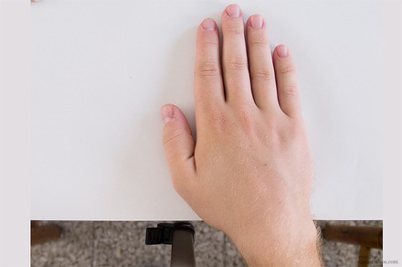
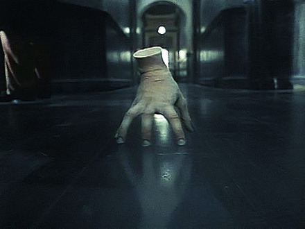
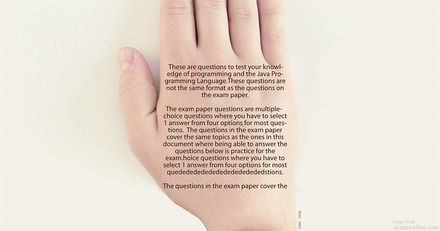
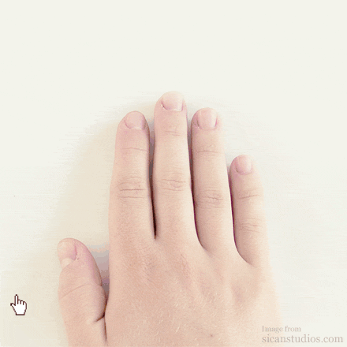

This was one of the first designs I did for this website, SicanStudios. I wanted to embrace a minimalist approach which would also be highly interactive. The design featured a photo of my hand and each individual finger of my hand was a link to different web page. When hovered, the finger would also rise up from the table, giving the user feedback on his choice. See the animation GIF on the right to view the interaction.
I began by taking six photos of my hand, each photo capturing the different finger movements. I placed my hand on a white paper to be able to mask it if I wanted. Took photos using an Olympus 3-500 mounted on a tripod. It was impossible for me when moving one finger to keep all the other fingers still, so I had to mask each finger in Adobe Photoshop.

As I was progressing with the design, I stumbled across two problems. First was how I would end the hand on the bottom part of the screen. I decided to take a surreal approach sort of like the hand is on its own; detached from a body. For that, I was inspired from the Adam's Family series which features a hand roaming free. Also the end of the hand reminds me the painting style of Salvador Dali.

The second problem encountered was that as soon as I added the content, it was difficult to read, especially if it was over a few sentences. I also had planned to include photographs in my portfolio, but using this kind of minimalistic approach proved unusable and not user friendly.

Although I think it was a good idea and concept, it didn't fit the content that would go in the website. So, I learned an early design lesson from this website design attempt. I should keep in mind the content of the website prior to starting a website design.

{kind=link}
{kind=link}
{kind=link}
{kind=link}